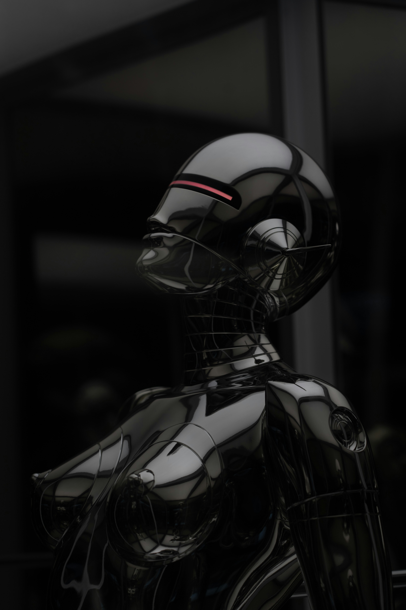
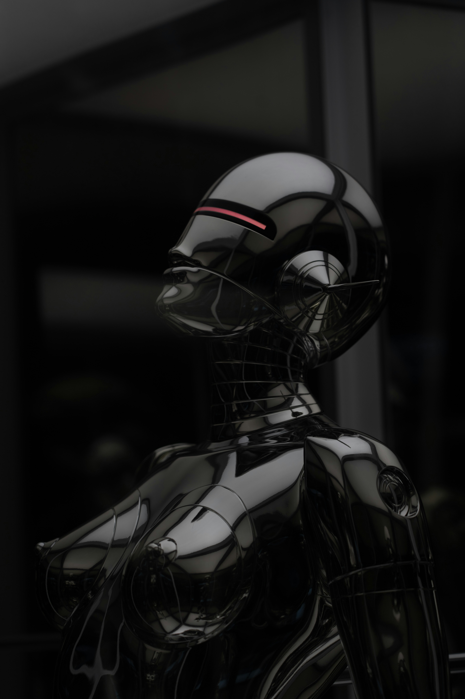

{{ username }}
{% endif %}Welcome to vision.AI Dashboard
CREATE STUNNING VISUALS
IN SECONDS
The ultimate ecosystem of apps, plugins & resources for all creators, powered by artificial intelligence.
.jpg) 

Too many photos contain unwanted objects, text, or persons. Now, you can simply remove all these flaws with Cleanup API.
You can quickly remove the background of any image with incredible accuracy without having to do a bunch of extra work!
Transform your low resolution image into an ultra sharp high resolution image.
Our implementation has been heavily optimized for extreme speed and provides high-quality images from text.
In photography, one of the most important factors to consider is depth.
Without surface normals, things can look very flat and unrealistic.
Reimagine and view your images differently with the Reimagine API.
The sketch to image API endpoint allows you to generate an image corresponding to a sketch and a prompt describing what you expect.
In this project, we are building a web application that allows users to
upload images and apply various processing
techniques using the ClipDrop API. The main features of the application include:
1. Image Upload: Users can upload images in JPEG or JPG format. They have the
option to either select an image using
the traditional file input or drag and drop the image onto a designated drop zone.
2. Processing Options The application provides multiple processing options:
- Inpainting
- Reimagine
- Sketch to image
- Remove Background
- Image upscaling
- Text to Image
- Portrait Depth Estimation
- Portrait Surface Normals
3. API Integration: The application uses the ClipDrop API to perform image
processing tasks. It communicates with
the API to send images, receive processed images, and handle errors.
4. Displaying Results: After processing an image, the application displays the
processed result on the same page.
Users can see the depth map, normal map, or text-generated image depending on the processing
option chosen.
5. Styling and Layout: The user interface is designed with a modern and
user-friendly approach. It incorporates
responsive design using Bootstrap, ensuring that the application looks good and functions well
on various screen sizes.
6. Error Handling: The application handles errors that may occur during image
processing or API interactions,
providing feedback to the user if something goes wrong.
7. File Management: The uploaded images and processed results are saved in the
`static` folder of the application,
allowing users to download them.
By combining Flask for backend functionality, HTML for front-end structure, and CSS for styling,
we create a complete
web application that offers image processing capabilities through the ClipDrop API. Users can
easily upload images,
choose processing options, view results, and download the processed images.
Hello there! Im Deepraj Bera, a dedicated and ambitious BTech student majoring in Computer Science at KIIT University. My journey in the world of technology has been marked by a profound passion for learning and a keen interest in both frontend and backend development.
As a motivated and detail-oriented programmer, I have honed my skills across various programming languages and my proficiency extends beyond the backend, as I am well-versed in frontend technologies. I bring projects to life with a creative touch, utilizing popular libraries to ensure sleek and responsive user interfaces.
My journey has led me to explore the exciting realm of AI/ML, where I have successfully implemented models using powerful tools such as TensorFlow, Pandas, and scikit-learn. Developing machine learning models is not just a skill for me; its a passion that drives me to contribute to innovative projects.